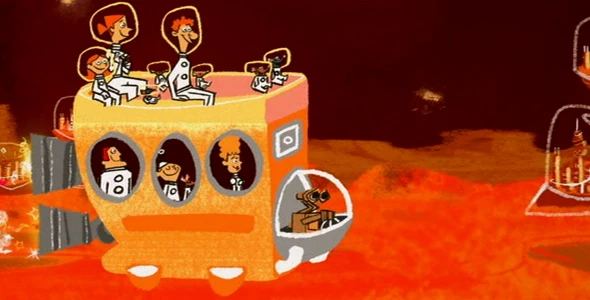

A Hidden Mickey is a representation of the beloved character, Mickey Mouse, which have been placed subtly in various attrations within Disney theme parks, tv shows, and also feature-length movie series. The Hidden Mickey is commonly depicted as three circles that form the sillouette of Mickey Mouse's head - also known as Classic Mickey by Disney aficionados.
Hidden Mickeys are placed all around Disney products and attractions. Typically, these patterns could be painted, made of various objects, or also be worn within certain paintings. The first easter egg was discovered by Arlen Miller who wrote the article on Hidden Mickeys in 1989. These original designs were first made during the designing of the EPCOT center to be more for adults, selling alcohol and such and preventing the use of disney characters as the company thought it would be improper to combine alcohol and their characters. Imagineers took this as a challenge and hid various patterns throughout the building,
Nemo Doll in Monsters, Inc. (2001)
Wall-E in Your Friend the Rat (2007)
Dug's Shadow in Ratatouille (2007)
